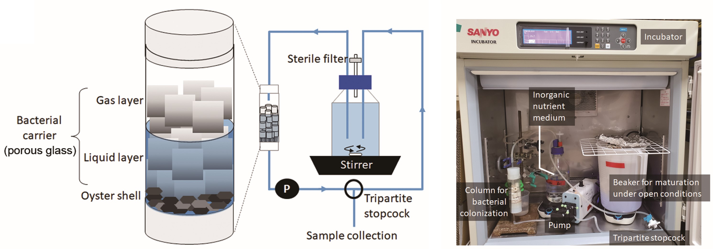

微生物、特に細菌（バクテリア）は目に見えない生き物です。 目に見えないがために、パッと見ただけでは本当に存在するのか分かりません。 しかしレーウェンフック先生の顕微鏡の発明（1665）が世の中のミクロのサイエンスを大きく進展させ、ほとんどの空間に微生物が存在することが証明されました。 では、なぜ未だ99％の細菌（バクテリア）は謎とされているのでしょうか！？ それには2つの理由があります。 一つは「種類が多すぎて網羅できない」ことが理由です。 現在は、環境ゲノム解析により微生物の存在自体は網羅されつつあります。 しかし、存在が分かっていても、目的とする微生物を捕まえるには多大な時間と労力・コストが伴います。 二つ目は「世の中にいる細菌の99％以上が培養できない」ことです。 なぜ培養できないかというと、眠っていたり、生きているけど数を増やさなかったり、あるいは非常に増殖速度が遅い、またはある微生物との共生が必要であることが理由です。それらのことが、未知であるといわれる所以です。 このような事実が分かった背景として、バイオテクノロジー／エレクトロテクノロジーの進展による解析技術の向上にあります。 特に、次世代シークエンサーが開発され、様々な遺伝学的情報が一度に大量に獲得できるようになり、環境中にどのような微生物がどのような存在比で存在するのかが分かるようになりました。 すると、研究者は環境中に存在する微生物を狙って、発酵研究に発展させようとします。 しかし目的の微生物を獲得し、培養し、モノを創らせるには多くの情報と技術が不足しています。 また、エビデンスを得るには培養や栽培といったウェットな実験が欠かせません。 私達の研究室では、その様な背景を踏まえ、次のような研究を展開しています。
●水産未利用資源の有効活用に向けたカニ殻土壌のエコシステム解析と有用放線菌の獲得
化石燃料の利用から生物資源を全面的に利用する社会への移行は責務であり、未利用生物資源を活用する研究開発は全世界で実施されています。 その中で鳥取大学では、日本で有数の水産県である鳥取県の水産未利用生物資源の利活用を通し、海洋資源に関するSDGsの実現化を目標とした「未利用生物資源活用研究センター」が設立されました。 本センターでは海藻や魚介類の廃棄部等を題材とし、機能・物性評価を通して水産未利用生物資源の魅力ある活用法の開発を目指しています。 その中で私は、カニ殻等の未利用資源キチンのユーザビリティを高めるべく、カニ殻土壌エコシステムの遺伝資源と酵素を利用した未利用資源キチンの活用研究を進めています。 以下にその研究の一例を示します。
１．キチンを高度に分解する放線菌「Cellulosimicrobium sp. NTK2」の機能解析と応用
Cellulosimicrobium sp. NTK2(NTK2株)は、2015年にカニ殻コンポストからキチン分解菌として単離された放線菌です。 放線菌でありながら菌糸は形成せず、この属の細菌は主に腐朽した木材にいることが知られていました。 一方でNTK2株は、キチンを高度に分解することから今後の未利用資源キチンからの有用物質生産への活用が期待されています。 NTK2株は2018年に全ゲノム配列が解析されて、その中に8種類のキチナーゼと2種類の溶解性多糖モノオキシゲナーゼを持つことが判明しました。 従ってNTK2株は、多くの種類のキチン分解系タンパク質を分泌することで、効率的にカニ殻を分解していると考えられます。 しかし、培養後の上清だけでは結晶性キチンの分解は不可能で、最近になりNTK2株の細胞の存在と生命活動が結晶性キチンの分解に不可欠であることが分かりました。 NTK2株の細胞の存在によるキチン分解のメカニズムを知ること、またNTK2株自身が分泌する二糖類吸収のためのタンパク質「Solute Binding Protein（SBP）」の遺伝子破壊は、今後のキチンからの有用物質生産にダイレクトに繋がります。 本研究ではNTK2株を核にした未利用資源キチンの有効利用の実現に向け、NTK2株の代謝解析や遺伝子破壊、そして得られた派生体を利用したキチンからの物質変換に焦点を当てて研究を進めています。

Fig. 1-1 NTK2株の培養に与えるキチンの影響と、それに伴うキチン分解系タンパク質の分泌
Fig. 1-2 キチンの分解にはNTK2株の生命活動が必須で、それに関わるSBPの役割
２．キチンを高度に分解する中等度好熱放線菌「Streptomyces thermolineatus JCM6307株（6307株）」の機能解析と応用
NTK2株に続いてレパートリーの拡充を目的に、キチン分解放線菌として6307株が選ばれました。 6307株は一般的なStreptomyces属放線菌ですが、37℃や45℃でも培養が可能で、他のStreptomyces属細菌とは一線を画します。 6307株はNTK2株と同様キチンを高度に分解するので、今後の未利用資源キチンからの有用物質生産への活用が期待されています。 6307株については2023年にゲノムが解析され、6種類のキチナーゼと2種類の溶解性多糖モノオキシゲナーゼ遺伝子を持っていることが分かりました。 また、各種キチン分解系タンパク質の発現パターンはキチンやキトサン、キチンナノファイバーの存在下でそれぞれ異なり、役割分担について興味が持たれます。 現在、この菌が持つキチン分解系タンパク質については、放線菌および大腸菌での発現系の構築が現在進められており、それらのタンパク質による未利用資源キチンの有効利用の実現に期待がかかります。
Fig. 2-1 Streptomyces thermolineatus 6307株の特徴
３．カニ殻土壌のエコシステム解析と有用土壌微生物の獲得
カニ殻は未利用資源として位置づけられています。 一方で、園芸や農作物生産では土壌にカニ殻をすきこむ農法があり、病害防除性の強化や生産性向上等の効果があるとされています。 この効果をもたらす要因は色々考えられていて、その一つに、カニ殻のキチンを栄養として放線菌が増殖し、それに伴って分泌される酵素、抗生物質、植物ホルモン様物質が病害防除性の強化に繋がっていると考えられています。 ただし、これは考えられているだけであって、本当かどうかは分かりません。 そこでエビデンスの獲得と有用性について評価するために、実際にカニ殻やキチン土壌を調製しエコシステム解析を行うことにしました。 今後は、カニ殻・キチンすきこみ土壌から放線菌を獲得して、ゲノム情報、分泌タンパク質、二次代謝産物と生理活性の繋がりの明確化を目標とし、分泌物の植物病原菌や作物への効果を検証して、良くも悪くもカニ殻すきこみ農法の科学的根拠を裏付ける予定です。 多少ギャンブルな要素が含まれますが、得られる情報は、組換え技術を利用したカニ殻等の未利用資源キチンからの物質生産と農業等への活用に繋げられるものになります。 本研究の進捗の動向に余念がありません。
Fig. 3-1 プロジェクトのアウトライン

Fig. 3-2 キチン・カニ殻すきこみ土壌による作物栽培の様子。
●ギンザケ・アユ・ニジマス・ヤマメ・イワナのような日本文化的冷淡水魚飼育への応用に特化した微生物技術開発
鳥取県は養殖推進県であり、境港の海面養殖技術で育てた銀鮭は「境港サーモン」ブランドとして認知されています。 その稚魚は、低温の河川水による「かけ流し式」で育てられるため、養殖は水質の良い15℃程度の水を供給できる場所に限られています。 また、海での養殖に移す際には輸送に多大なコストがかかり、生体へのリスクも大変大きい作業が伴います。 そこで、生産性が高く場所を選ばない閉鎖型循環式陸上養殖を、銀鮭稚魚の養殖に応用する取り組みが2018年から開始されました。 しかし低温での閉鎖型養殖では微生物によるアンモニアの除去能、すなわち硝化能が極端に低く、毒性が極めて高いアンモニアの急速な蓄積が観察されました。 そこで低温でのアンモニア蓄積問題を解決するべく、独自にアンモニア酸化細菌育成用の培養装置（Fig. 4-1）を組み立て、低温集積培養を繰り返して、低温でのアンモニア除去を1日で除去することを可能にする細菌叢を手に入れました。 このプロジェクトでは、この細菌叢をどのように利用すれば効果的であるのか、どのような場面で必要となるのかについて検証しています。 以下にその研究の一例を示します。

Fig. 4-1 独自で構築した低温アンモニア酸化細菌叢構築のための閉鎖式循環培養装置
１．低温硝化細菌を利用した渓流環境アクアポニックスの構築
アクアポニックスは、水耕栽培と魚の循環養殖を掛け合わせた次世代循環型農業で、土地や水資源を効率的に活用した食料生産に寄与します。 その仕組みは、魚の排泄物や餌カスを微生物が分解し、作物が分解物を吸収するというものになります。 その結果、魚の飼育水浄化を伴い作物と魚が育ちます。 一方で、低温環境が必要な銀鮭稚魚等の飼育では、様子が一転します。 アクアポニクスでは排泄物からのアンモニア（致死：～1 ppm）の高度な除去が求められるのですが、低温環境では微生物の硝化能が極端に低く、養殖場にアンモニアが蓄積され、飼育魚は死に至ってしまいます。 私たちはこれまでに、独自の集積培養装置を組み立て、低温でアンモニアを除去できる細菌叢の獲得に成功しました。 本研究はこの問題点を解決すべく、独自に獲得した低温で硝化できる細菌叢を使用し、新たな低温アクアポニックスの構築を目指しています。 アクアポニックスの生態系は微生物、植物、魚が関与するため非常に複雑で、低温環境下でのバランスの取れた生態系の構築は、大きなチャレンジであるといえます。 この低温環境下のアクアポニックスの実現は、銀鮭や渓流魚の養殖を可能にするほか、冬季に農業が停滞する寒冷地域での、土地や水資源を効率的に活用した食料生産に大きく貢献できる可能性があります。
Fig. 4-2 魚の大敵“アンモニア”を低温で分解する微生物を獲得し、メダカ水槽に応用するときの様子
Fig. 4-3 渓流を模倣した閉鎖型循環陸上養殖アクアポニックス技術から導き出される産業や問題解決
微生物の培養は、植物や動物とは異なり、一部を除いて1日から1週間という短い時間で完結します。 従って、微生物の研究は比較的早く情報獲得が可能であるという特徴を持ちます。 一方で、安全キャビネットやオートクレーブ、フィルター滅菌等の無菌操作が必要で、研究を始めるまでに技術習得が必須です。 また、中にはデリケートな細菌もいて、培養条件が少しでも変われば全く異なる表情を見せるものもあります。 その特徴を捉えることも、微生物研究の大事な部分となります。
おさえておくポイント
・培養時間と自分の生活とをどのようにフィットさせるか？
・培養のたびにどのような条件の変化が生じるか？
・条件を変えた場合にどのような項目で変化を観察するか？

有馬研究室では、上記の研究以外にも、機能解析や構造解析によるタンパク質・酵素の全容・酵素・微生物機能を使った様々なモノや現象に対する付加価値の付与に向けた研究しております。また、有用微生物の探索では、鳥取県の需要に合わせて水産業に特化した課題と、グローバルな思考のテーマを組み合わせたグローカルな研究を目指しています。